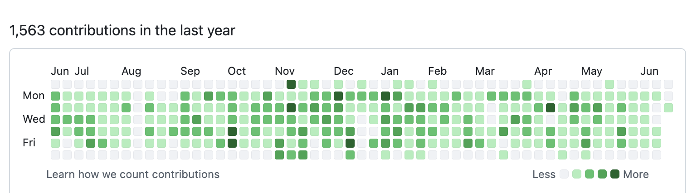
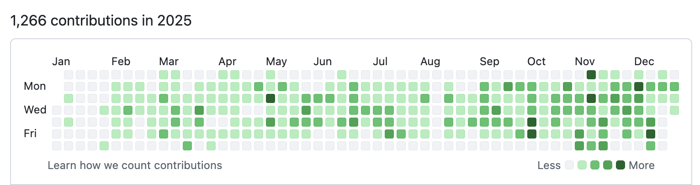
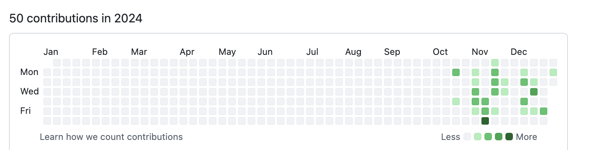

Engineering executive · Technical co-founder
I build AI products from scratch and scale the teams and platforms behind them. Currently CTO & Co-Founder of Brevian AI.
19+ years across AI/ML systems, knowledge graphs, RAG, and agentic AI, from founding teams to orgs of 100+ engineers at venture-backed startups (Sequoia, a16z, Y Combinator). This is where my technical work, writing, research, and patents live in one place.
In one place
LLM-planned execution graphs for scalable ad-hoc analysis over enterprise data. Deployed in production at Brevian.
→ WritingEssays on context engineering, multi-agent harnesses, and the MCP intelligence layer.
→ PatentsSix granted patents / applications from Helix on cross-network genomic data interfaces.
→ ProfilePublications and citations.
→Experience
AI sales intelligence built on a structured knowledge graph and a multi-agent LLM system. Set product vision, designed the architecture, and built the engineering org. Shipped Meeting Prep, Live Assist, Sales Coaching, and CRM Updates.
ML infrastructure for deploying and serving AI models at scale. Led developer experience and model observability on TRT-LLM and vLLM, drove SOC2, and launched the self-hosted enterprise offering.
Cloud analytics on Apache Superset (backed by a16z, Redpoint). Launched SaaS, Hybrid Cloud, and Embedded products; scaled engineering from 20 to 60+ across frontend, platform, data, and infra.
Digital mortgage closing platform (Sequoia, Y Combinator). Grew engineering from 11 to 100, building frontend, platform, data engineering, data science, and infrastructure teams from scratch.
Personal genomics platform (KPCB, DFJ). Started the mobile team and shipped Helix's first native iOS app; built the platform iOS SDK, marketplace APIs, and OAuth2 framework for partners.
Built Office prototypes with ML and an iOS app using MS Band biometrics for stress detection with Microsoft Research. Selected for the High Potential (HiPo) program.
Full-stack apps, APIs, and data pipelines for Typekit; optimized Flash Player and AIR runtime on Android for battery, memory, and rendering performance.
Selected external work
Company posts and features tied to my work at each org.
Side projects
Code
Most of my recent building lives under @anusual (earlier work under @anupreet). From 50 contributions in 2024 to 1,266 in 2025 and 1,563 in the last year, much of it relearning the craft hands-on.



github.com/anusual ↗